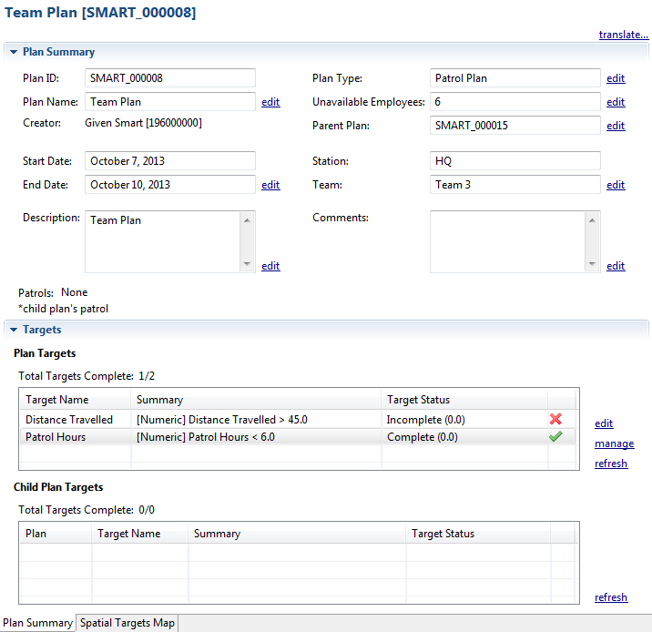
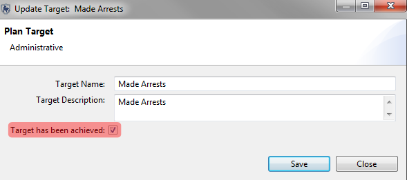
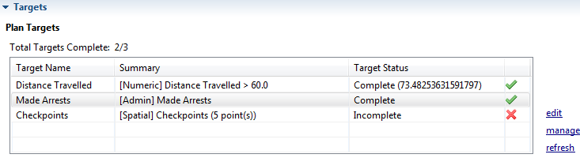
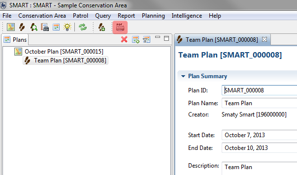

SMART Plans allow for a set of targets to be assigned to a patrol or series of patrols and to keep track of available and active rangers. SMART plans can be arranged in a parent-child relationship where a parent plan can have a number of children plans (sub-plans) that are associated with the parent. Plans are assigned to patrols, and when a patrol returns from the field and the data has been entered into SMART the software will automatically validate whether the objectives have been met or not. Plans, including maps, can be printed in PDF form which could be used by managers or those in the field.
A plan allows for specific targets and goals to be assigned to a Conservation Area, station, team or series of patrols. A plan is created through the use of a wizard, similar to the wizard used to create patrols. After a plan has been created, it can be associated with a patrol or series of patrols, which then use(s) the track information to calculate the success or failure of defined targets.
Steps in Creating a Plan
1. Template - Create a plan from scratch or use an existing plan as a template
2. Plan Type - Choose the type of plan (Patrol, Team, Station or Conservation Area) and available rangers for the plan
3. Parent Plan - Choose whether the plan is a sub-plan of another plan or stands alone
4. Plan Information - Plan ID, Name and Description
5. Station / Team - Selection of the Team and Station involved in the plan
6. Plan Dates - Selection of the start and end date of the plan
7. Plan Targets - Add targets and objectives to the plan
Target Types
Numeric Target Types:


Plan Summary Overview

edit - edits the selected plan target
manage - opens a dialog to add new targets
refresh - refreshes validation checks on patrols associated with these targets
After a plan has been created, it can then be assigned to a patrol or multiple patrols.
Linking a patrol to a plan requires that the user open that specific patrol in the Patrol Perspective and click on the "Other" tab (bottom of window).
Then, clicking on the edit link next to the Plan window will open a dialog to link the active patrol with a plan.

After a patrol has been linked to a plan, SMART can validate the numeric and spatial targets. These targets are validated against the track information, so if no track information has been entered the validation of the plans will not be successful.

After the patrols and plans have been linked, the user will need to click the refresh button to run the validation. When the target has been successfully validated, the red circle turns green. This applies to numeric and spatial targets.
Validation of administrative targets is a manual process which requires the user to select and edit the Admin targets and click the checkbox "Target has been achieved".

Returning to the overview and clicking the refresh button the Admin target is validated and changed to successful.

After a plan has been created it can be converted and viewed in a PDF format. The PDF can then be printed or saved for later access.

To print the active plan requires the user to click the PDF icon (see image above) or to select the menue item Planning--Export to PDF. SMART will then generate a PDF using a default template and then open up the PDF for the user to print.
Editing the Plan Template
To edit the plan template users will need to select the menu item Planning--Plan Template--Edit Planning Template. This will open up the BIRT reporting framework that is also used to create Conservation Area reports. Information on how to edit BIRT reports can be found in the Help section of BIRT Report Developer Guide.